This post continues in the discussion of building yourself a DIY dimensional portal (or some type of vehicle) for world-line crossovers and slides. This is part three. Part one was an introduction to the concepts that various people can build a DIY dimensional portal. Part two discussed the very important aspects of mass / gravity separation of the entity (person) entering the portal, and the portal itself.
And here, in this part we will discuss measuring the frequencies of the gravity elements involved when a person enters the portal. This measurement of frequencies is the assignment of coordinates of where you are right now at the moment of teleportation.
Measure frequencies = Assign egress coordinates.
High Frequency Gravity Waves
The fundamental idea is that we would detect the super weak HFGW that is associated with both the mass of the person entering the portal, and that of the portal itself. This would create a frequency profile. This profile in turn, can be considered a set of coordinates for the dimensional portal to work with.
Gravitational waves (GW) are a prediction of Einstein’s general theory of relativity, but (due to their weakness) took a long, long time to discover.
Measurement of their indirect effects on the orbits of certain binary neutron stars was a major experimental triumph, and merited the award of a Nobel Prize in Physics. Further; these measurements agree with theory to better than 1%. Therefore, there really isn’t any question of their existence. The issue is really how to detect them for small gravitational masses, up close, quickly and accurately.
The term HFGW has come to mean gravitational waves at much higher frequencies of several GHz, say 10GHz to be specific. A general rule of thumb is that the highest gravitational wave frequencies produced will be at around the reciprocal of the freefall timescale for a system fmax∼ √Gρ, where ρ is the average density of the system.
Dr. Robert Baker, Jr. has a design for an open cavity High-Frequency Gravitational Wave Detector in the GHz band. His design consists of a high-quality-factor open microwave cavity and a Gaussian beam (GB) passing through a static magnetic field in free space.
Baker is regarded as the preemininent researcher in the field of High-Frequency Gravitational Wave research, and proposes this new detector model as a means of facilitating significant new potential applications for the wireless telecommunications sector.
Essentially this effect is an inverse Gertsenshtein effect in which HFGWs are converted into electromagnetic (EM) waves when passing through a static magnetic field.
Our dimensional portal would detect the isolated HFGW’s from both the portal and the person entering the portal. It would convert the values into electromagnetic waves when the person enters the dimensional portal. Of course, for this to work, the entire portal would need to be a static magnetic field.
The Physics of HFGW’s
Newton’s formulation of the theory of gravity,
for two spherical gravitating masses MG(1) and MG(2) is equivalent to the
“non-relativistic” gravitational field description
in which a non-dimensional “potential” hˆ has been chosen to agree with the mathematical language used for it in General Relativity. Here MI and MG are the inertial and gravitational masses respectively, and ρI and ρG are the distributions of these masses. Equations (3-4) and (3-5) are an instantaneous action-at-a-distance description which is inconsistent with the constraints of Special Relativity.
In General Relativity (which is generalizes Newton’s theory) Equations
(3-4) – (3-6) become
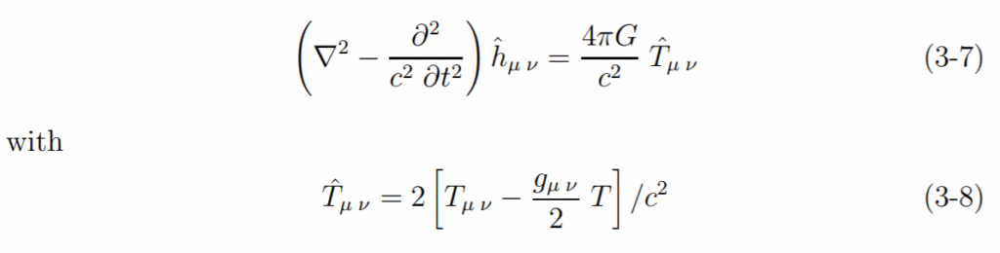
Tμ ν is the complete relativistic stress-energy tensor of everything including the gravitational field itself, and T is its trace. (gμ ν is the Minkowski metric tensor of Special Relativity plus ˆhμ ν .) Confirmed predictions include the equivalence principle ρI = ρG (to better than 10−10), the calculated value for the bending of light passing near the sun and gravitational lensing of light in other parts of the Universe, many solar system observations, and remarkably accurate observations of neutron star binaries.
The full content and implications of General Relativity are not needed
for any of the HFGW predictions to be considered below. For example the
quantum energy density in a vacuum is negligibly small compared to the other important matter and field contributions to Tμ ν in our local environment. All of the HFGW amplitudes of interest here are so small that their contributions to energy density can be neglected in Tˆμ ν.
In a vacuum with only hˆμ ν present the RHS of Equation (3-7) vanishes, leaving the familiar free field wave equation
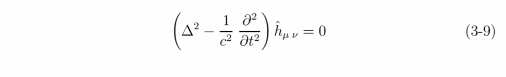
The robustness of the basic theory for the HFGWs discussed below is
even more robust than that of General Relativity.
Hypotheses about changes in gravity and Tμ ν from string theory might change it at length scales 1 cm and some have proposed changes at huge (astronomical/cosmological) scales but neither would change Equations (3-7) on the scales of interest here.
Because we are concerned with such small HFGW intensities it is often
constructive to describe these flows as a flow of gravitational quanta (gravitons).
Gravitons are a necessary consequence of Quantum Mechanics applied to Equation (3-9) and bear the same necessary relationship to Equations (3-9) and (3-7) as photons do to electromagnetic fields.
In particular
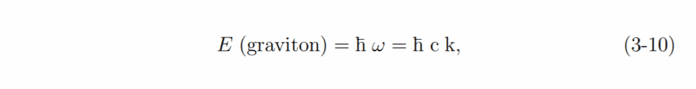
with ω = 2π× frequency and k = 2π/λ.
Figure 1 shows the electromagnetic-gravity field interactions in Equation
(3-7) as (static gravity or graviton) – (photon or static electromagnetic field)
interactions.
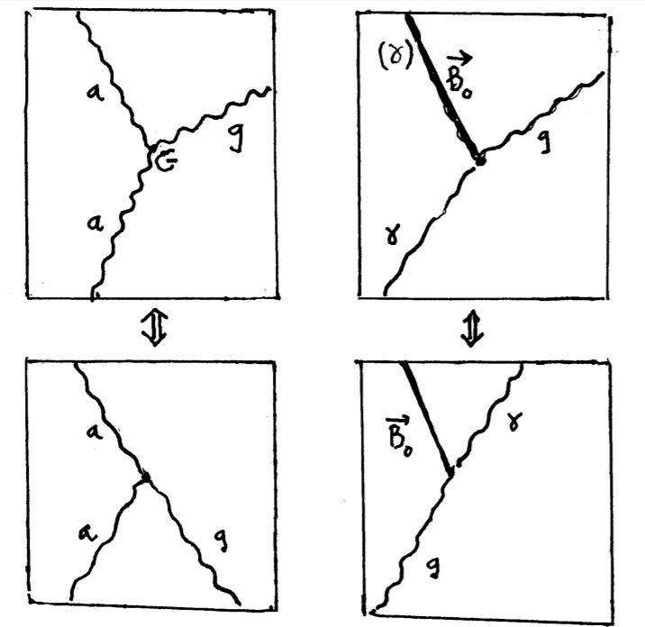
Figure 1: Feynman diagrams of quantum (graviton/photon) reactions in
quantized gravitational field versions of General (and Special) Relativity.
γ ≡ HF electromagnetic field or static field (B0); g ≡ graviton: A ≡ any
particle.
Measuring HFGW from gravity masses
The LIGO detectors, which measured the waves, do not use bar detectors; they use interferometers. Bar detectors have been used for decades, but they have not been sensitive enough to make actual detections. They are necessarily very short, which reduces the effect of a gravitational wave. As you indicate they also have fairly narrow resonant frequencies at which they are most sensitive. Interferometers, on the other hand, can be made 4 kilometers long (like the LIGO detectors), which magnifies the effect of the waves. They are also sensitive over a fairly broad range -- roughly 40Hz to 2000Hz. As anna v rightly points out, there actually are plenty of references to frequency if you look at the science papers. I work in gravitational-wave astronomy, and decomposing things into frequencies is our bread and butter. There's less coverage of this in the popular press, presumably because the public tunes out talk of frequencies, and pop-sci journalists know where their bread is buttered. But Fourier transforms are really how the analysis gets done. -Physics Stack Exchange
Dr. Robert Baker, Jr. has a design for an open cavity High-Frequency Gravitational Wave Detector in the GHz band, which consists of a high-quality-factor open microwave cavity and a Gaussian beam (GB) passing through a static magnetic field in free space.
Essentially this effect is an inverse Gertsenshtein effect in which HFGWs are converted into electromagnetic (EM) waves when passing through a static magnetic field.
Converting measured HFGW into electromagnetic waves for frequency generation.
A basic mechanism for generating a EM wave from a measured HFGW is the direct conversion of the same frequency by a strong static magnetic field (−→B0).
This Gertsenshtein process is idealized in Figure 3. The GW power out, PG W (in), is proportional to the electromagnetic wave incoming power PEMW (out):
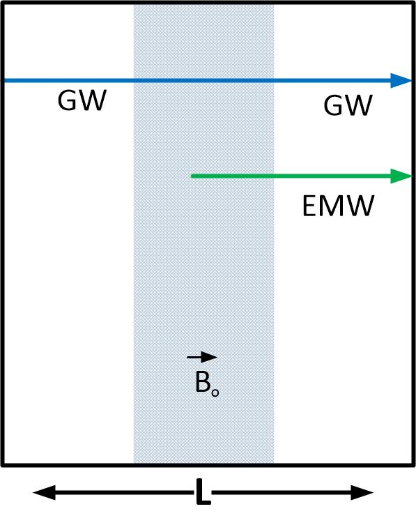
constant magnetic field B0,
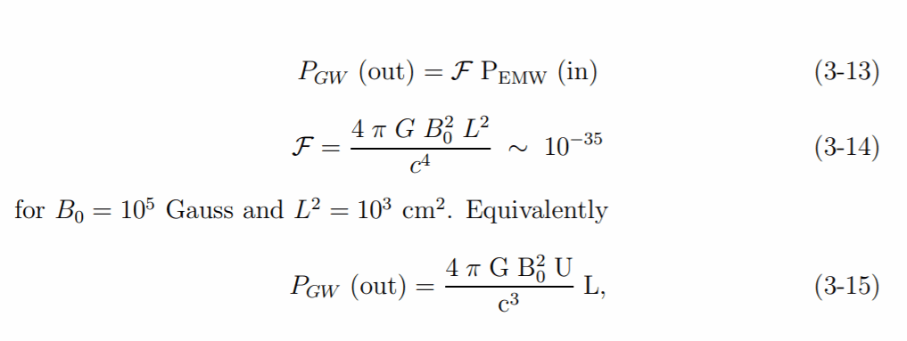
where U is the total EMW energy in the volume (V) in which the EMW passes through B0.
is the energy density in that region.
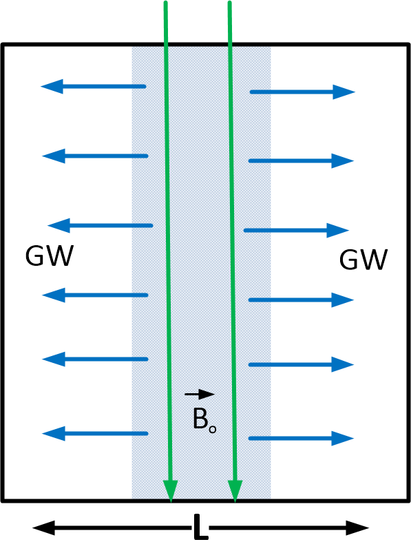
cavity.
For the geometry of Figure (3) in which the passage of the EMW through
B0 is not otherwise interrupted
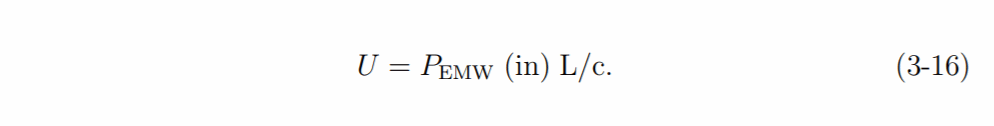
For P(in) ∼ 10 kW, and L = 30 cm, U = 10−5 joules. If the EMF is
contained as a normal mode within V,U can be very much larger. However, there are various limits to U which are independent of the available EMW power. For a cavity with EM dissipation time τ
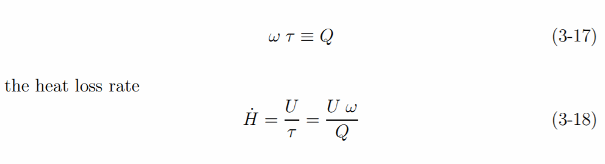
For a (generous) cooling rate from an exterior coolant flow around a
copper cavity H˙ ∼ 106 watts, Q ∼ 2 × 103, Umax ∼ 2 × 10−1 joules and
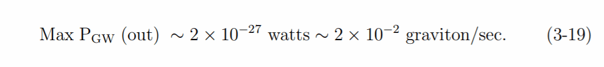
(We note that it would take a continual EM power input of one MWatt to
maintain this tiny GW output.)
If we replace the copper-walled cavity by one with superconducting walls
τ may increase from the ∼ 10−7 sec of Cu by a factor ∼ 107. However, Umax
could not increase by nearly such a factor, even if we ignore any problems
of maintaining superconductivity near the huge −→B0, and keeping the very low temperature needed. The u inside the superconducting cavity would be limited by unacceptable electron emission from a mode’s strong electric field perpendicular to a wall:
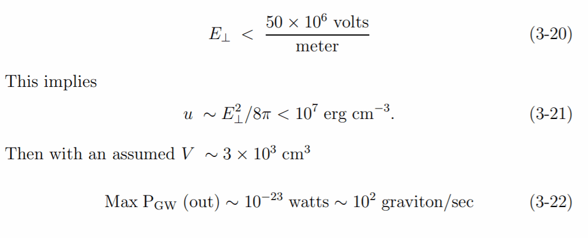
Even if this crucial limit is ignored there would be a limit to u from the
maximum mechanical strength of the container confining the electromagnetic modes:
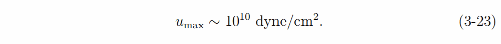
The limit of Equation (3-23) and V ∼ 3 × 103 cm3 gives UMax ∼ 3 × 106J
and
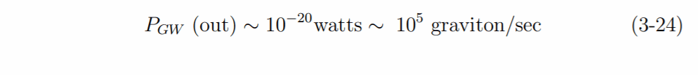
Finally we could ask the ultimate limit when, instead of −→Bo ∼ 105 Gauss
and EM waves V is filled with moving masses, EM energy, etc. all contained
within V ∼ 3 × 103 cm3 to the limit where the container explodes. Then
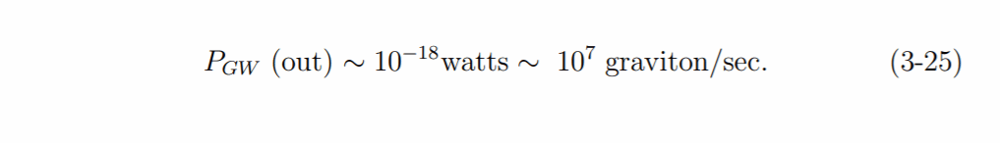
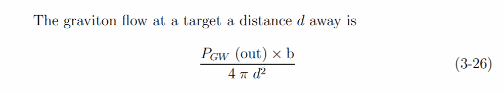
where d is the distance to the target and b a directional beaming factor
which we take ∼ 102. Then for d > 1 km the maximum flux at a target
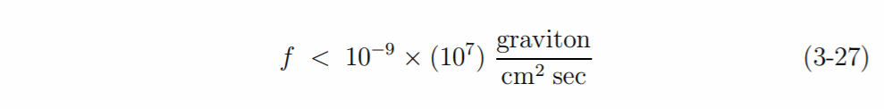
for the unrealistically large limit of Equation (3-25). Increasing V to 107
cm3 would still limit
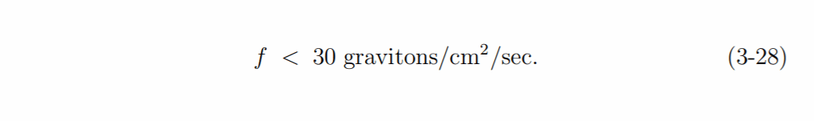
Almost none will be stopped or converted within the target. (But even
if they were their total impulse would cause no damage to any part of it.)
HFGW Detectors [1]
Proposed HFGW detectors have generally been based upon versions
of the inverse Gertsenshtein process. The most elementary one is that in
Figure 5. As in Equations (3-13) and (3-14)
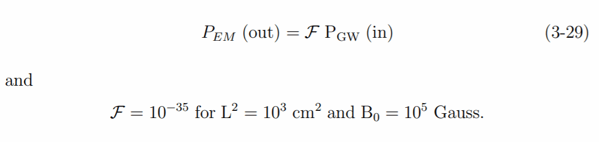
For the maximum HFGW generator production of 102 graviton/sec of Equation (3-22), and b ∼ 102 and d ∼ 10 m in Equation (3-26), and a detector area transverse to the beam (Aˆ) = 104cm2
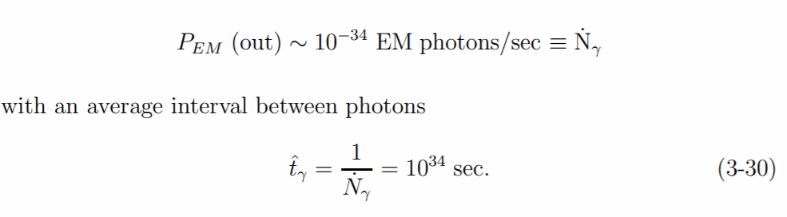
Such a small photon flow would, of course, never be observed, no matter
what plausible changes are made in HFGW generator, d, b, or Aˆ. However
proposals have been made to decrease this interval by very great factors.
One such proposal introduces an additional EMW0 with the same frequency as the GW and the very weak EMW it generates in passing through the strong −→B0 region. This is well understood “homodyning” of the weak signal. It does not increase a signal to noise ratio when the noise is the minimal photon noise from quantization. If we consider the simple geometry of
frequencies.
Figure 6 with the electromagnetic waves electric field normal to the plane of wave propagation and −→B0, there are two possibilities for interference between EGW, the electric field of the EMW generated by the GW and E0. In one the original propagation directions are coincident. Then the total field (−→E T )
with −→E T the homodyning field and −→E GW that from GW conversion along the common trajectory. If EGW reaches the photon detector so must E 0. That detector’s photon counting rate
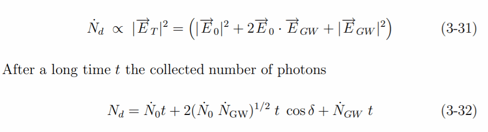
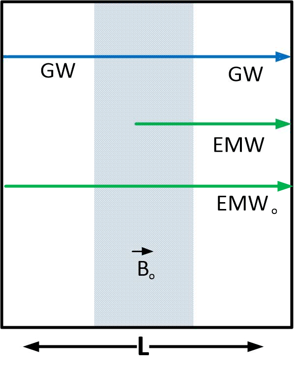
with N˙ 0 the counting rate when N˙ GW = 0 and N˙ GW the very much smaller rate when N˙ 0 = 0. A non-zero cos δ can arise from phase match between −→E 0 and −→E GW .
The large N0 = N˙ 0t is the expectation value of a Poisson distribution
of width N1/2 0 which is intrinsic to the quantum (photon) distribution in the classical wave description.
The main N˙ GW contribution to the detector counts (2 (N˙ 0N˙ GW)1/2 cos δ t) must be significantly larger than this fluctuation (N˙ 0t)1/2 for the signal/minimal photon noise ratio to exceed unity:
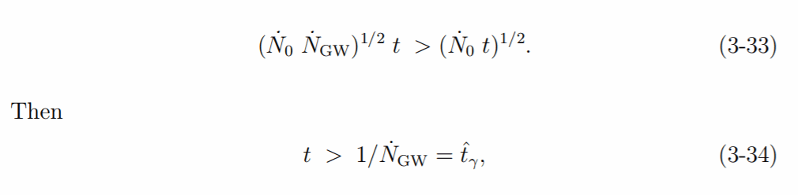
i.e., it will still take the t ˆγ of Equation (3-30) to identify with any confidence a single EMW photon from incoming GW graviton conversion.
If the −→E 0 photons differ enough in direction from the EGW ones so that they do not reach the detector the photon fluctuations |−→E 0|2 term of Equation (3-31) could be absent, but so would 2−→E 0· −→E GW so that again t ∼ 1/N˙ γ . The history of this interference term before the detector is reached is not relevant: t ∼ 1/N˙ GW whether or not −→E 0 reaches the photon detector with −→E GW or what its magnitude there is as long as it gives the minimal fluctuation in photon number as the major noise source at the EMW detector.
If instead of −→E 0 with the same frequency at the EMW from HFGW
conversion (homodyning), the −→E 0 wave has a different frequency (ω
) and the detector admits ω ± ω (heterodyning) the quantum limit still gives the same needed t (to within a factor 2) for a signal to noise ratio exceeding one; see Marcuse [13] (Eqs. 6.5–14,6.5–17) with the minimum bandwidth B ∼ t−1 achieved over a time t,
HFGW Detectors [2]
A second kind of proposal for greatly increasing the photon counting rate from graviton → photon conversion is to contain the conversion volume within reflecting walls for EMWs.
This is similar to the same sort of proposal to increase the efficiency of Gertsenshtein conversion of photons to gravitons in Figure 3. It differs, however, in that the containing cavity does not reflect the gravitons which are the source for conversion, but only the photons which are the product of it.
If we start with an empty cavity with mode decay time τ and a resonance frequency ω0 = ω (or at least |ω − ω0| < ω0/Q) the cavity will initially fill with EM mode energy (U) at a rate
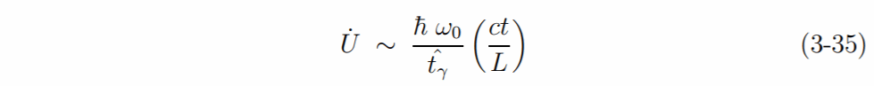
which will continually increase until a steady state is reached at t ∼ τ ≡ Q/ω. (U is not limited in the cavity detector by the considerations of Sec 3.
because it is always so tiny in comparison to those in a GW generator).
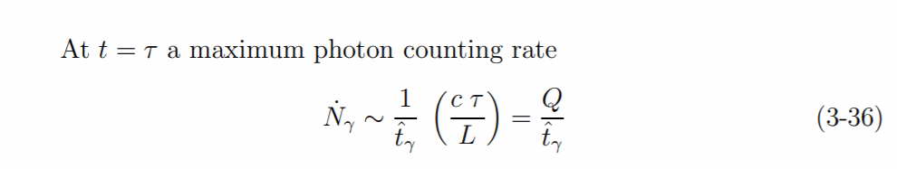
if cavity photons are counted instead of being dissipated in the cavity walls.
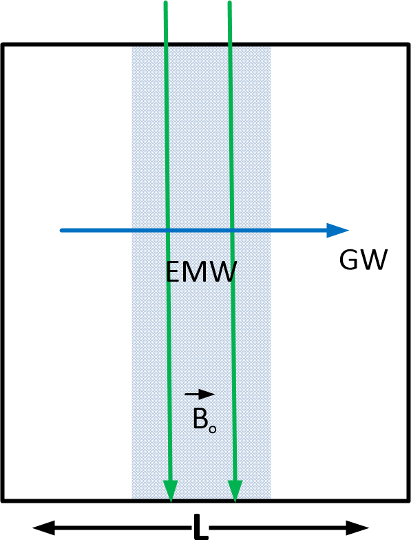
frequency.
If, unphysically, finite cavity mode decay time did not limit N˙ γ we might
still note how long (t1) it would take for the expected number of GW induced photons inside the cavity to reach one, i.e.
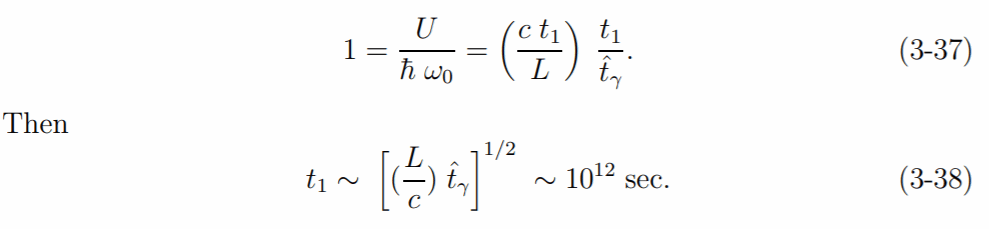
However, finite τ = (Q/ω) does limit the cavity U. The maximum expected value for GW induced photon number in the cavity never approaches
unity. Instead
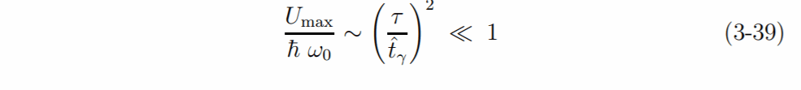
A copper-walled cavity with Q ∼ 2×103 would decrease the time interval
between GW induced photons in the cavity, but only to
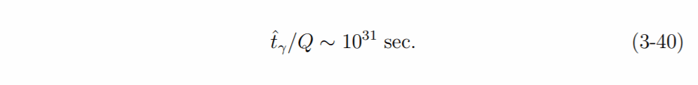
The largest plausible τ would be for a cavity with superconducting walls.
Then τ might reach, say, 10 seconds (Q ∼ 10E11). Then
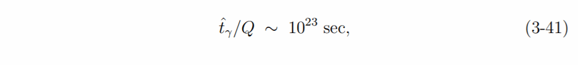
still essentially an infinite time between photon counts.
If the cavity GW induced photon energy were homodyned (or heterodyned) by introducing additional resonant mode electromagnetic field energy the photon number fluctuations in that energy would again not allow interference to increase the time interval for signal/photon noise > 1 to be less than the ˆtγ/Q of Equations (3-40)- (41).
What this means
There is a way (of a couple of ways) to measure the gravity waves associated with the gravity of a person entering a portal, and that of the portal itself. These waves at a precise moment in time can be used as a coordinate.
It is not practical to use this technology for any other purposes.
The photon counting rates for confident detection of graviton-induced photons from proposed HFGW generators and detectors is so small that development of HFGW communication links is not a reasonable prospect.
- Not useful for communication.
The graviton interception-transformation rate at a large cooperative
target (specially designed to detect gravitons) 10−20 [ cf Equations (3-29)
and (3-36)]. When combined with the comparably small fraction for photo → graviton efficiency in HFGW generators this implies that to deposit even an ergs worth of HFGW gravitons in a target requires 1040 ergs of electric power input to a HFGW generator. This is more than total energy from electric power generation on the earth (< 1012 watts) for longer than the age of the Universe.
Use of HFGW beams for destroying, deflecting, or compromising distant targets (or close ones) has no promise.
- Not useful for weapons.
Thus it seems silly that the United States government would consider putting this technology in a “black project” to keep it out of the public eye.
Conclusion
This part discussed creation of a mechanism to measure the gravity waves associated with the gravity of both the dimensional portal and a person entering it.
With this mechanism you can identify the exact world-line you are in at an exact frozen moment of time, and assign a coordinate to it.
You can do so in isolation of the person, and thus create a mechanism that would take this “person” at one coordinate and slide him to another coordinate instantaneously.
Since the coordinate is very detailed, it includes not only the physical geography of a place, but a moment in “time”, and if you change the coordinates slightly, you can use this mechanism to move a person back and forth in …
- Geography. You can move about from place A to place B.
- Time. You can move from one point in time to another.
But since, you have the entire spectrum of coordinates at your “finger tips” you can alter the parameters of the coordinates to enter completely different world-lines. You can go into the so-called parallel universes…
- World-line. You can go from one world-line to another.
In the next post, we will discuss how to use these frequencies to move a person from one set of coordinates to another set. Hang on…